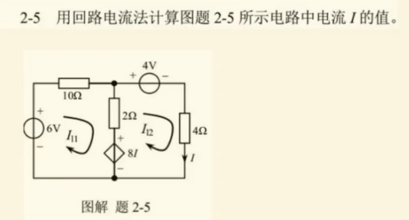

主张学习 / 电路验算
VoltEdu 的电路回答怎样当场验算
本章目录
论文正文第 42–43 页恰好留下三次可以用笔复查的回答。本地 7B 做对了一道分压题，又在叠加定理里多加了一个错误条件。随后学生上传教材图题，独立视觉接口给出 −5 A。把这三张答题截图和原电路放在一起，就能追问每个答案从哪里来，又能用什么办法检查。
面试时可以这样讲
我会先在白板上画一个 12 V 分压器。VoltEdu 的本地模型给出 7.2 V 和 2.4 Ω，这两个数用开路和短路各验一次就能对上。同一个模型讲叠加定理时，却把线性受控源也排除了。图题走另一条视觉接口，它在有受控源的双网孔电路上答 −5 A。按原图的电源极性重算，电流应当沿箭头向下 3 A。
| 原件 | 当时的输入与处理方式 | 屏幕上看到的结果 |
|---|---|---|
| 图 4-11 | 网页输入分压器的文字描述，由 /human 调本地课程模型 |
给出戴维南电压 7.2 V、电阻 2.4 Ω 和计算过程 |
| 图 4-10 | 同一本地模型解释叠加定理 | 写出了独立源置零方法，同时把“不包含受控源”列为条件 |
| 图 4-12、图 4-13 | 教材例题 2-5 以图片上传，经 /solve_image 调独立视觉模型 |
图 4-13 的最终结果为 −5 A |
分压器的正例，开路时 6 Ω 还在
图 4-11 中，12 V 理想电压源接串联的 4 Ω 与 6 Ω，输出端跨在 6 Ω 两端。取 6 Ω 靠电源正极的一端为电压正端。所谓端口开路，是先断开外接负载。内部两个电阻仍有闭合回路，这个区别决定第一行要怎么算。
- 求开路电压。 内部电流为
12 / (4 + 6) = 1.2 A，端口电压为U_th = 1.2 × 6 = 7.2 V。 - 求等效电阻。 把独立理想电压源置零，用短路代替。此时从端口看，两个电阻跨在同一对节点上，
R_th = (4 × 6) / (4 + 6) = 2.4 Ω。 - 复盘验算。 用外部导线短接端口，6 Ω 被旁路，原电路短路电流为
12 / 4 = 3 A。等效电路给出7.2 / 2.4 = 3 A，两种画法的端口响应一致。
留样 all.txt 第 16,684 行有一道同拓扑、同数值的选择题。演示可以用来讲清端口怎样取。想考新题，可以改变负载或移动端口，让模型重新说明哪两个节点等电位。
本地模型把线性受控源排除在叠加法之外
图 4-10 的回答先说适用条件包括“不包含受控源”，随后又说受控源应保留原位置。正确的做法是对线性电路的电压、电流响应叠加。每次保留一个独立源，其余独立电压源置零后短路、独立电流源置零后开路。电路中的线性受控源始终保留，控制量取当前这一次激励下的值。MIT 电路课程关于受控源与叠加的讲义
图 3-5 的训练预览第一题恰好就是这道叠加定理题。模型在熟悉的问法下，写对了短路和开路的操作，又给出了错误的适用条件。面试时可以接着拿出下图的 8I 受控源，把“要保留控制关系”变成一道有数值答案的题。
图题错在右网孔经过 4 V 源时的符号


图 4-12 的左支路是上正下负的 6 V 源，左上有 10 Ω。中支路自上而下是 2 Ω 和上正下负的受控电压源 8I。右边是 4 Ω，待求电流 I 的箭头向下。上边 4 V 源左正右负。程序 llm.py 的图题请求使用 doubao-1-5-vision-pro-32k-250115。答辩第 23 页展示图像上传流程，论文图 4-13 保留了返回的列式和 −5 A。
按原图复算。 令左、右网孔电流 i₁、i₂ 都顺时针，则 I = i₂。沿顺时针累加压降，穿过电源从正极到负极记正压降。
| 网孔 | 按行走方向列压降 | 化简 |
|---|---|---|
| 左 | 10i₁ + 2(i₁ − i₂) + 8i₂ − 6 = 0 |
12i₁ + 6i₂ = 6 |
| 右 | 4 + 4i₂ + 2(i₂ − i₁) − 8i₂ = 0 |
i₁ + i₂ = 2 |
联立得 i₁ = −1 A、i₂ = 3 A，所以 I 沿图上箭头向下 3 A。用节点电压再验一次。以下端为零电位，右上端为 4 × 3 = 12 V，4 V 源左侧的中上节点为 16 V，受控源上端为 8 × 3 = 24 V。从中上节点看，流向三支路的电流代数和为 (16 − 6)/10 + (16 − 24)/2 + 3 = 1 − 4 + 3 = 0 A。
反事实练习。 如果只把上边 4 V 源反接，右网孔第一项就从 +4 变成 −4，右式变为 i₁ + i₂ = −2，左式保持原样。解出 i₁ = 3 A、i₂ = −5 A。因此，截图里的数值恰好对应这个反接后的电路。定位错误时，回到图上看电源两侧的正负号，比重做最后一步除法更有用。
面试追问与参考答案
问一 给分压器接上 6 Ω 的外部负载，端口还有 7.2 V 吗？
参考答案（教学变式） 原内部 6 Ω 与外部 6 Ω 并联成 3 Ω，端口电压为 12 × 3 / (4 + 3) = 36/7 V ≈ 5.14 V。用戴维南等效也得到 7.2 × 6 / (2.4 + 6) ≈ 5.14 V。7.2 V 对应外部开路时的读数。
问二 就在原图上分别保留 6 V 和 4 V，能把向下 3 A 拆出来吗？
参考答案（教学推演） 可以。先把 4 V 源短接，保留 8I，两式变为 12i₁ + 6i₂ = 6 与 i₁ + i₂ = 0，右支路贡献 −1 A。再把 6 V 源短接，仍保留 8I，两式变为 12i₁ + 6i₂ = 0 与 i₁ + i₂ = 2，右支路贡献 4 A。叠加得到 −1 + 4 = 3 A，也纠正了本地模型对受控源的说法。
问三 如果再让 VoltEdu 给学生讲这道图题，怎样找到读错的那一步？
参考答案（复盘建议） 我会让视觉模型先返回端点、元件值、电源极性和 I 的参考方向，照图核对后再列回路方程。给学生的解答里同时保留右网孔第一项和节点电流回代。这样可以看出是图片被读反、遍历方向选错，还是代数解错。文字问答的测试与图题接口的测试分别保存预测，错误就能追到对应模块。
原件材料位置
- 《基于智能体的电类课程资源构建技术研究》正文第 42 页（PDF 第 48 页），图 4-10 是本地概念题，图 4-11 是本地分压题。正文第 43 页（PDF 第 49 页），图 4-12 是原电路，图 4-13 是视觉回答。
- 《毕业答辩演示》第 22 页演示文字计算题，第 23 页演示图题。提交程序的图片
1.jpg是教材例题 2-5。训练预览见论文图 3-5，汇总留样all.txt第 2 行和第 16,684–16,686 行分别是叠加定理题和分压选择题。 app.py的solve_image接收图片，llm.py的solve_problem_from_base64第 339–367 行发出视觉请求。《实习简历》项目三“多模态交互”对应这个独立视觉接口。
换个条件，再试一次
把 12 V 分压题的输出端从 6 Ω 两端移到 4 Ω 两端，开路电压和等效电阻是多少？
一点提示
保留原网络的两只电阻，先算回路电流，再把理想电压源置零。
核对解法
两电阻串联时电流仍为 1.2 A，跨 4 Ω 的开路电压幅值为 4.8 V。置零后从新端口看到 4 Ω 与 6 Ω 并联，等效电阻仍是 2.4 Ω。